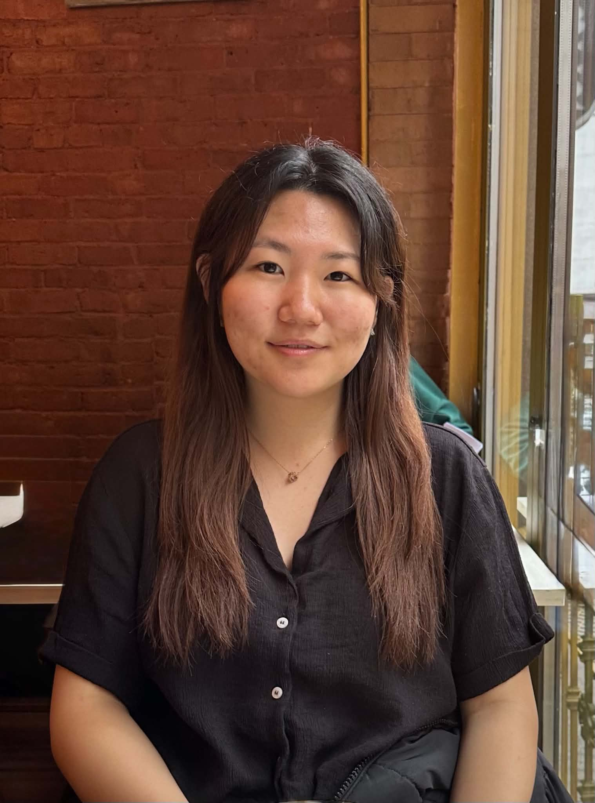

|
Jinhee Won
I am an M.Eng student in the MIT Laboratory for Information and Decision Systems (LIDS), supervised by Prof. Munther Dahleh and Prof. Mardavij Roozbehani. I also am SERC Scholar at the MIT Schwarzman College of Computing, working with Dr. Xinlan Emily Hu. I earned my B.Sc. (2026) in Artificial Intelligence and Decision Making from MIT.
I work on challenging machine learning problems, broadly spanning four research themes. (1) Reinforcement learning studies sequential decision-making under uncertainty, where an agent must act in a dynamic environment from incomplete information. (2) Interpretable machine learning builds models whose predictions can be explained and audited rather than taken on trust, so that they can be deployed in settings where the reasoning matters as much as the answer. (3) Structured learning exploits the combinatorial and relational structure latent in data instead of treating it as unstructured vectors. (4) Language models and social behavior examines how the advice and judgments of LLMs shift across languages and personas, and what that implies for using them as instruments to study people.
I have spent time interning as a quantitative trader at IMC Trading, as a firmware engineer at Samsara, and in venture investment at YellowDog. Before that, I have also worked in computational biology on neurodevelopmental disorders.
Email /
LinkedIn /
Github /
Resume
|

|
Research
My research spans reinforcement learning, interpretable machine learning, and structured learning, along with earlier work in computational biology.
|
|
|
Personas Differ from Native-Language Generation: Language Pathways Shape LLM Interpersonal Advice
Jinhee Won,
Xinlan Emily Hu
EMNLP, 2026
arXiv
Cross-cultural studies of LLMs often ask a model to answer as a native speaker. We compare that against generating in the target language and translating back, and find the two are not interchangeable: the choice shifts how advice is framed and which action the model recommends.
|
|
|
A haploinsufficiency restoration strategy corrects neurobehavioral deficits in Nf1+/− mice
Su Jung Park,
Jodi L. Lukkes,
Ka-Kui Chan,
Hayley P. Drozd,
Callie B. Burgin,
Shaomin Qian,
Morgan McKenzie Sullivan,
Cesar Gabriel Guevara,
Nolen Cunningham,
Stephanie Arenas,
Makenna A. Collins,
Jacob Zucker,
Jinhee Won,
Abbi Smith,
Li Jiang,
Dana K. Mitchell,
Steven D. Rhodes,
Steven P. Angus,
D. Wade Clapp
Journal of Clinical Investigation, 135(13), 2025
paper
The neurodevelopmental symptoms of neurofibromatosis type 1 arise under partial rather than complete loss of the gene, suggesting they may be reversible. Raising endogenous levels of the remaining protein corrects neurobehavioral deficits in a mouse model.
|
|
Fall 2025, Fall 2026
|
Teaching Assistant, 6.7920 Reinforcement Learning: Foundations and Methods
Massachusetts Institute of Technology
notes
|
|
Spring 2026
|
Teaching Assistant, 6.8300 Advances in Computer Vision
Massachusetts Institute of Technology
|
Blog
Occasional notes on things I'm reading, building, or thinking about.
|
|
No posts yet. Check back soon!
|
|
{kind=link}